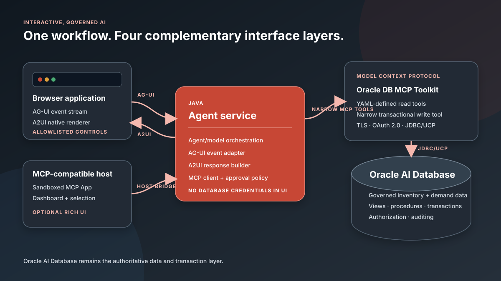

Oracle AI Database · MCP · Agent-to-UI protocols
Build Interactive, Governed AI Apps with A2UI, AG-UI, MCP Apps, the Oracle Database MCP Java Toolkit, and Oracle AI Database
A reference account-risk assistant that streams agent work, renders safe native controls, offers an optional embedded dashboard, and keeps data and transactions in Oracle AI Database.
Text is enough for many agent answers. It is not enough when a person must explore governed data, understand why an account is risky, select one record, enter notes, and explicitly approve a transactional follow-up. That workflow needs progress, state, controls, validation, and a clear security boundary.
This reference project combines four technologies without blending their responsibilities. AG-UI streams agent activity. A2UI describes a native interface. MCP Apps supplies an optional rich dashboard inside a compatible host. The Oracle Database MCP Java Toolkit exposes purpose-built, bounded tools backed by Oracle AI Database.
All source code, SQL, YAML, security notes, and the verified implementation plan are in the project folder on GitHub.

Video Walkthrough
This narrated walkthrough shows the live-tested account-risk workflow and the source behind each layer: AG-UI streaming, A2UI validation and rendering, Oracle UCP, database views and the transactional procedure, Oracle Database MCP Java Toolkit YAML, and the optional MCP App.
The repository includes the Swift/AVFoundation build source and YouTube-ready SRT subtitles. This local player can be replaced with the eventual YouTube embed without changing the article flow.
Key Takeaways
- AG-UI is the event and state stream between the frontend and agent; A2UI is a declarative UI payload that can travel over that stream.
- MCP Apps are optional sandboxed HTML experiences for dashboards and complex interactions inside MCP-compatible hosts, not a replacement for a custom web frontend.
- The Oracle Database MCP Java Toolkit should expose purpose-built business tools instead of unrestricted SQL, especially for model-initiated workflows.
- Approval belongs in the application policy layer, while the resulting business write belongs in a stored procedure and caller-controlled database transaction.
Why a Text-Only Agent Is Insufficient
Consider the request: “Show me high-risk customer accounts, explain the main risk factors, and let me approve a follow-up action.” A useful experience must expose more than an answer:
- the current run status and database tool being invoked;
- a bounded, selectable result set rather than a prose dump;
- risk levels, account values, ownership, and supporting events;
- an action type and notes field with validation;
- an explicit confirmation boundary before a write; and
- a final action ID and auditable completion state.
The model may help decide what to retrieve and how to explain it. It should not decide whether a human approved a write, invent executable UI code, or receive unrestricted database privileges.
What AG-UI, A2UI, MCP Apps, and MCP Each Solve
| Layer | Primary job | In this demo |
|---|---|---|
| AG-UI | Standardize events and shared state between an agent backend and a user-facing application. | Streams run lifecycle, assistant text, MCP tool activity, state, and recoverable errors over SSE. |
| A2UI | Describe UI structure and data declaratively so a client renders its own trusted components. | Describes the account review surface, form controls, and actions using v0.9.1 envelopes. |
| MCP Apps | Render rich HTML interfaces inside a host-controlled sandboxed iframe and communicate through the host bridge. | Displays risk metrics, distributions, account cards, and a “send selection to conversation” action. |
| Oracle Database MCP Java Toolkit | Expose Oracle Database capabilities through MCP, including custom YAML tools and database-backed operations. | Hosts two bounded YAML read tools and a single-purpose transactional write extension contract. |
| Oracle AI Database | Remain the trusted system of record and execution layer. | Stores accounts, risk events, and actions; applies views, validation, transactions, authorization, and auditing. |
The important design decision: do not place all AG-UI and A2UI implementation inside the database MCP toolkit. The toolkit is database-facing. Orchestration and approval belong in the agent service; rendering belongs in the frontend.
Where the Protocols Overlap
A2UI does not mandate one transport. Its v0.9.1 specification explicitly allows AG-UI to carry A2UI messages. The project uses AG-UI’s standard CUSTOM event, named a2ui.message, whose value is an A2UI envelope. That preserves both contracts instead of inventing an event such as A2UI_RENDER.
A2UI and MCP Apps can both make an interaction visual, but their trust and rendering models differ. A2UI sends declarative components that the host maps to its native design system. MCP Apps sends an HTML resource rendered in a sandboxed iframe. Use A2UI when restricted, host-native controls are the goal. Use an MCP App when the user needs a chart, canvas, dashboard, or workflow that exceeds the native catalog.
AG-UI and MCP also carry tool activity, but in different relationships. MCP connects the agent or host to tools. AG-UI connects the agent to its end-user frontend. One tool call can therefore be an MCP request downstream and a sequence of AG-UI TOOL_CALL_START, TOOL_CALL_ARGS, TOOL_CALL_END, and TOOL_CALL_RESULT events upstream.
Start with the Oracle AI Database Model
The schema contains 20 deterministic customer accounts, two risk events per account, and an action table. Read-only views give the tools a stable application contract. The full scripts are in database/.
CREATE TABLE customer_actions (
action_id NUMBER GENERATED BY DEFAULT AS IDENTITY PRIMARY KEY,
customer_id NUMBER NOT NULL,
action_type VARCHAR2(100) NOT NULL,
action_notes VARCHAR2(2000) NOT NULL,
requested_by VARCHAR2(200) NOT NULL,
action_status VARCHAR2(30) NOT NULL,
created_at TIMESTAMP DEFAULT SYSTIMESTAMP NOT NULL,
completed_at TIMESTAMP,
CONSTRAINT fk_action_customer FOREIGN KEY (customer_id)
REFERENCES customer_accounts(customer_id)
);The model never receives a general-purpose write tool. An approved action calls one stored procedure that validates the action type and notes, locks the selected account, inserts the action, and updates the account status.
CREATE OR REPLACE PROCEDURE create_customer_follow_up (
p_customer_id IN NUMBER,
p_action_type IN VARCHAR2,
p_action_notes IN VARCHAR2,
p_requested_by IN VARCHAR2,
p_action_id OUT NUMBER
) AS
BEGIN
-- validate, lock the account, insert the action, update status
-- no COMMIT: the calling MCP tool owns commit or rollback
END;
/Keeping the transaction boundary outside the procedure matters. The MCP write tool can roll back if the call, result conversion, audit step, or surrounding workflow fails.
Define Safer, Purpose-Built Oracle Database MCP Tools
The current Oracle Database MCP Java Toolkit supports custom tools in YAML, Streamable HTTP and stdio transports, JDBC/UCP pooling, TLS, development bearer tokens, and OAuth 2.0. It also includes broad database operator tools. Those broad tools are intentionally not enabled here.
Terminology: “narrow tool” is descriptive shorthand in this article, not a formal MCP or Oracle Toolkit tool category. Here it means a purpose-built, allowlisted operation with bounded inputs and outputs, explicit validation, and least-privileged database access. Those constraints make behavior more predictable, auditable, and safer than exposing unrestricted SQL; they do not make any tool inherently or absolutely safe.
The bounded risk query is declarative. All user values are binds, and an outer ROWNUM predicate avoids depending on a bind inside FETCH FIRST.
tools:
find-at-risk-customers:
description: Returns governed accounts at or above a risk score.
parameters:
- name: minimumRisk
type: number
required: true
- name: maximumRows
type: integer
required: true
statement: >-
SELECT * FROM (
SELECT customer_id, customer_name, account_value,
risk_score, risk_level, risk_summary, owner_name
FROM account_risk_summary_v
WHERE risk_score >= :minimumRisk
ORDER BY risk_score DESC
) WHERE ROWNUM <= :maximumRowsThere is a real compatibility boundary in the write tool. The current YAML parameter shape does not declare callable OUT parameters. Because the procedure must return p_action_id and the caller must control commit or rollback, the project records create-customer-follow-up as a single-purpose Java extension contract instead of pretending it works in YAML. That extension should use a JDBC CallableStatement, register the numeric OUT parameter, commit after success, and roll back on every exception.
Stream the Workflow with AG-UI
The Java service emits official AG-UI event names. Approval is represented in a STATE_SNAPSHOT, not as an invented protocol event:
RUN_STARTED
STEP_STARTED
TEXT_MESSAGE_START
TEXT_MESSAGE_CONTENT
TOOL_CALL_START
TOOL_CALL_ARGS
TOOL_CALL_END
TOOL_CALL_RESULT
STEP_FINISHED
STATE_SNAPSHOT status = AWAITING_APPROVAL
CUSTOM name = a2ui.message
TEXT_MESSAGE_END
RUN_FINISHEDThe UI can show progress before the complete result arrives, correlate tool arguments and results with one toolCallId, and recover cleanly from a RUN_ERROR. A production adapter should also propagate timeouts and cancellation from the browser through the MCP request.
Render Native Controls with A2UI
A2UI v0.9.1 is the current production release at the time of writing. Its server stream uses exactly four envelope types: createSurface, updateComponents, updateDataModel, and deleteSurface. This demo creates one account-risk surface, supplies an adjacency-list component tree, and then supplies the data separately.
{
"version": "v0.9.1",
"createSurface": {
"surfaceId": "account-risk-review",
"catalogId": "https://a2ui.org/specification/v0_9_1/catalogs/basic/catalog.json",
"sendDataModel": true
}
}The development renderer accepts only Column, Row, List, Card, Text, Button, TextField, and ChoicePicker. It rejects unexpected versions, catalogs, surface IDs, envelope shapes, and component names. Generated values enter the DOM through textContent; no A2UI payload can provide JavaScript.
That is the security value of a declarative protocol. The agent can choose from capabilities the application already trusts, but it cannot create a new executable capability.
Add a Rich Dashboard with MCP Apps
The optional dashboard is a separate TypeScript package. Its tool metadata references ui://oracle-account-risk/dashboard-v1. The server returns the resource using text/html;profile=mcp-app, and an MCP Apps-compatible host renders it in a sandboxed iframe.
The sandbox is an MCP Apps security characteristic, not a demo-only choice. The host controls the iframe, isolates the app from the parent DOM, cookies, and storage, and mediates communication through postMessage. The app can request declared capabilities and external origins through permissions and CSP metadata, but the host remains the enforcement point. Host support varies because MCP Apps is an extension to core MCP.
registerAppTool(server, "show-account-risk-dashboard", {
title: "Show account risk dashboard",
inputSchema: {},
_meta: { ui: { resourceUri, visibility: ["model", "app"] } }
}, async () => ({
content: [{ type: "text", text: "Account risk dashboard ready." }],
structuredContent: { accounts }
}));The app reads structuredContent; it does not parse prose and never connects to Oracle Database. When the user selects an account, updateModelContext sends that structured choice back through the host bridge. The app remains optional because MCP Apps support varies by host.
Implement Approval Before the Transactional Write
When the read completes, the agent service issues a short-lived approval ID bound to the authenticated actor and the exact account IDs returned by the governed query. The user must select one of those accounts and confirm an allowlisted action type. The server consumes the approval ID once before invoking the write.
Canceling removes the pending approval and makes no write call. Reusing an approval, switching actors, selecting an account outside the result set, or submitting invalid notes fails validation. For a production deployment, store hashed approval and idempotency records durably rather than in process memory.
Run the Reference Application
The runnable service uses Oracle UCP and defaults to the same financialdb_high database alias and FINANCIAL schema as the observability demo. Copy the environment template, point it at the wallet, set DB_PASSWORD, and install the account-risk objects:
cd a2ui_agui_mcpapps_mcptoolkit
cp .env.example .env
# Edit .env and set TNS_ADMIN and DB_PASSWORD.
# DB_URL is optional; it defaults to the financialdb_high alias.
cd agent-service
./setup-database.sh
./test.sh
./run.sh
# open http://127.0.0.1:8080The guarded JDBC setup runner creates and seeds the objects only when no account-risk core objects exist. It refuses partial or populated state, never drops objects, and becomes a no-op after a successful installation. If SQLcl is available, database/setup.sql remains an equivalent option.
UCP reads the governed ACCOUNT_RISK_SUMMARY_V with bounded, bound SQL. An approved follow-up invokes CREATE_CUSTOMER_FOLLOW_UP through a CallableStatement, registers the numeric OUT parameter, commits on success, and rolls back on failure. The pool validates borrowed connections and applies bounded wait, size, inactivity, and row-prefetch settings.
The tests cover bounded reads, invalid input, rejection without a write, single-use approval, and the presence of official AG-UI events and A2UI v0.9.1 envelopes. To run only the UI and protocol flow without database credentials, start with APP_DATA_MODE=demo ./run.sh.
Direct JDBC/UCP provides the immediately runnable database-backed path. For the target MCP deployment, build the Oracle toolkit from a sibling checkout, configure Streamable HTTP with TLS and OAuth 2.0, load tools.yaml, enable only account-risk-read, implement the recorded single-purpose write extension, and replace the UCP repository with an MCP client adapter.
Current status: the repository foundation, Oracle UCP datasource, database reads and transactional writes, UI, protocol stream, SQL, YAML reads, write contract, tests, security design, and MCP App source are implemented. The direct database path requires a reachable database, the financial wallet, and a locally supplied password; secrets are not committed.
Security and Governance Checklist
- Use a least-privileged database principal with only the required view and procedure grants.
- Use TLS and OAuth 2.0 for remote MCP; the toolkit’s generated bearer token mode is development-only.
- Enable only purpose-built tools. Do not use
-Dtools=*or unrestrictedwrite-queryin the production-style demo. - Validate inputs at the agent service, MCP tool, and database procedure boundaries.
- Bind every user value and enforce score, row-count, text-length, and timeout limits.
- Bind approval to actor, scope, expiry, and a single use; add durable idempotency for production.
- Log tool name, actor, timestamp, input classification, approval, and status without logging secrets or full sensitive rows.
- Allowlist A2UI catalogs and components; treat MCP App content as untrusted and apply sandbox, CSP, and permission controls.
- Keep wallets, passwords, tokens, and client secrets out of the browser and repository.
Decision Guide
| Use | When |
|---|---|
| AG-UI | You own a custom agent frontend and need streamed messages, tool activity, progress, and synchronized state. |
| A2UI | The agent should compose native, accessible controls from a restricted catalog without sending executable code. |
| MCP Apps | A compatible conversational host needs a sandboxed dashboard, chart, canvas, or complex embedded workflow. |
| Oracle Database MCP Java Toolkit | Oracle data, vector search, transactions, or stored business operations must be exposed as MCP tools. |
| All four | Each layer adds distinct value to the same end-to-end interaction. |
Limitations and Next Steps
The Java AG-UI SDK is community-maintained and evolving, so the foundation uses the official wire event contract without a hard dependency on a volatile artifact. A2UI v1.0 is still a candidate; adopting it will require its new action response and surface-property changes. MCP Apps host support and capabilities vary.
The direct UCP path is now live-tested against the financial database. The next implementation milestone is MCP integration: a minimal Oracle toolkit write extension, an MCP client adapter in the agent service, transactional rollback integration tests, and screenshots from an MCP Apps-compatible host. After that, add real identity, database authorization policies, durable approvals, vector-supported risk explanations, and centralized audit export.
Frequently Asked Questions
Does A2UI replace AG-UI?
No. A2UI describes UI surfaces and data; AG-UI carries agent events and state. A2UI messages can travel inside AG-UI custom events.
Does an MCP App replace the web client?
No. An MCP App is useful inside compatible conversational hosts. A standalone web application remains the better fit when you own the complete frontend or need broad browser capabilities.
Why not give the model the toolkit’s write-query tool?
An unrestricted write tool dramatically increases scope and injection risk. A purpose-built procedure-backed tool makes the allowed operation, validation, privileges, transaction, and audit result explicit.
Where should approval be enforced?
The application binds approval to the authenticated actor and selected data. The MCP tool revalidates its input, and Oracle AI Database executes the business write transactionally. Each boundary has a distinct responsibility.